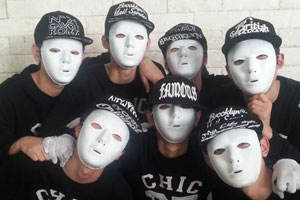
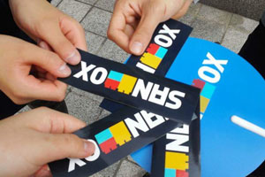
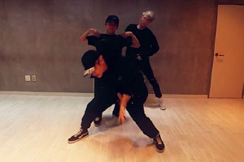
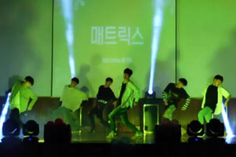
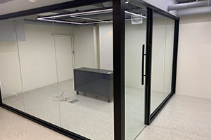
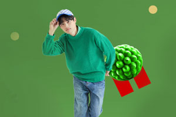

|  | 2013년FreeSTYLE 결성우연히 접한 댄스팀 자바워키즈의 퍼포먼스에 빠져 교내 댄스팀을 결성해 학교 축제 무대에 올랐다. |
|  | 2015년SANDBOX Network 합류MCN 기업 샌드박스네트워크와 크리에이터 파트너쉽을 맺고 취미로 운영하던 유튜브 활동을 본격적으로 시작했다. 게임, 일상, 댄스 등 다양한 분야의 영상을 제작했다. |
|  | 2016년소통:Culture 설립예술가를 꿈꾸는 청소년들의 협업 프로젝트를 진행하는 스타트업을 창업해 ‘문화로 세상과 소통하다’라는 슬로건에 맞춰 정기 공연과 영상 제작 등 다양한 프로젝트를 진행했다 . |
|  | 2017년MATRIX 합류고등학교 졸업 후 취미활동 지속을 위해 댄스팀 매트릭스에 합류했다. 지역 축제와 고등학교 찬조 공연 등 다양한 무대를 경험했다. |
|  | 2022년힉스코리아 인턴군 전역 직후 6개월 간 인턴 디자이너로 근무했다. 온라인 스토어 광고 배너 제작과 앱 서비스 디자인을 주로 경험했다. |
|  | 2024년계원예술대학교 입학계원예술대학교 디지털미디어디자인과에 면접 전형으로 입학했다. 입학 후 교내 홍보대사 및 2학기 학급 부대표로 활동했다. |